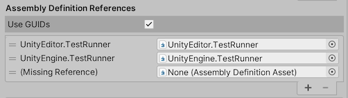
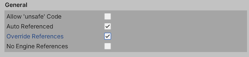
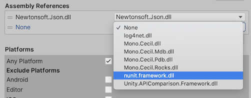
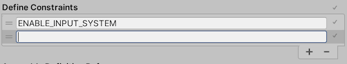
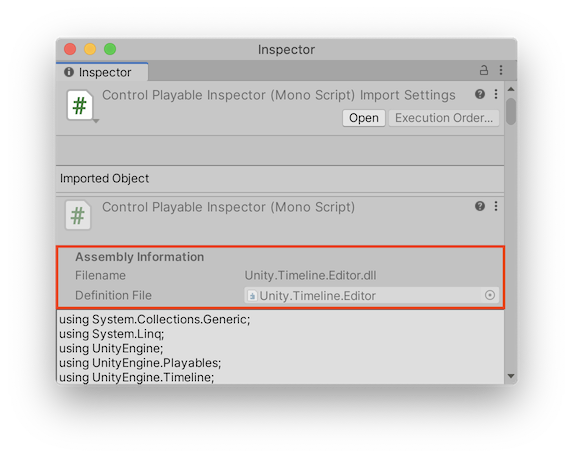

Assembly Definitions and Assembly References are assets that you can create to organize your scripts into assemblies.
An assembly is a C# code library that contains the compiled classes and structs that are defined by your scripts and which also define references to other assemblies. See Assemblies in .NET for general information about assemblies in C#.
This arrangement works acceptably for small projects, but has some drawbacks as you add more code to your project:
Every time you change one script, Unity has to recompile all the other scripts, increasing overall compilation time for iterative code changes.
Any script can directly access types defined in any other script, which can make it more difficult to refactor and improve your code.
All scripts are compiled for all platforms.
By defining assemblies, you can organize your code to promote modularity and reusability. Scripts in the assemblies you define for your project are no longer added to the default assemblies and can only access scripts in those other assemblies that you designate.
The above diagram illustrates how you might split up the code in your project into multiple assemblies. Because Main references Stuff and not the other way around, you know that any changes to the code in Main cannot affect the code in Stuff. Similarly, because Library doesn’t depend on any other assemblies, you can more easily reuse the code in Library in another project.
This section discusses how to create and set up Assembly Definition and Assembly Reference assets to define assemblies for your project:
To organize your project code into assemblies, create a folder for each desired assembly and move the scripts that should belong to each assembly into the relevant folder. Then create Assembly Definition assets to specify the assembly properties.
Unity takes all of the scripts in a folder that contains an Assembly Definition asset and compiles them into an assembly, using the name and other settings defined by the asset. Unity also includes scripts in any child folders in the same assembly, unless the child folder has its own Assembly Definition or Assembly Reference asset.
To include scripts from a non-child folder in an existing assembly, create an Assembly Reference asset in the non-child folder and set it to reference the Assembly Definition asset that defines the target assembly. For example, you can combine the scripts from all the Editor folders in your project in their own assembly, no matter where those folders are located.
Unity compiles assemblies in an order determined by their dependencies; you cannot specify the order in which compilation takes place.
References and dependencies
When one type (such as a class or struct) uses another type, the first type is dependent on the second. When Unity compiles a script, it must also have access to any types or other code the script depends upon. Likewise, when the compiled code runs, it must have access to the compiled versions of its dependencies. If two types are in different assemblies, an assembly containing a dependent type must declare a reference to the assembly containing the type upon which it depends.
You can control the references between assemblies used in your project using the options of an Assembly Definition. The Assembly Definition settings include:
Auto Referenced – Whether the predefined assemblies reference the assembly
Note: Classes in assemblies created with an Assembly Definition cannot use types defined in the predefined assemblies.
Default references
By default, the predefined assemblies reference all other assemblies, including those created with Assembly Definitions (1) and precompiled assemblies added to the project as plugins (2). In addition, assemblies you create with an Assembly Definition asset automatically reference all precompiled assemblies (3):
In the default setup, classes in the predefined assemblies can use all types defined by any other assemblies in the project. Likewise, assemblies you create with an Assembly Definition asset can use all types defined in any precompiled (plug-in) assemblies.
You can prevent an assembly from being referenced by the predefined assemblies by turning off the Auto Referenced option in the Inspector for an Assembly Definition asset. Turning off auto-referenced means that the predefined assemblies are not recompiled when you change code in the assembly, but also means that the predefined assemblies cannot use code in this assembly directly. See Assembly Definition properties.
Likewise, you can prevent a plugin assembly from being automatically referenced by turning off the Auto Referenced property in the Plugin Inspector for a plugin asset. This affects both predefined assemblies and those you create with an Assembly Definition. For more information, see Plugin Inspector.
When you turn off Auto Referenced for a plug-in, you can explicitly reference it in the Inspector for an Assembly Definition asset. Enable the asset’s Override References option and add a reference to the plug-in. See Assembly Definition properties.
Note: You cannot declare explicit references for the precompiled assemblies. The predefined assemblies can only use code in auto-referenced assemblies.
Cyclical references
A cyclical assembly reference exists when one assembly references a second assembly that, in turn, references the first assembly. Such cyclical references between assemblies are not allowed and are reported as an error with the message, “Assembly with cyclic references detected.”
Typically, such cyclical references between assemblies occur because of cyclical references within the classes defined in the assemblies. While there is nothing technically invalid about cyclical references between classes in the same assembly, cyclical references between classes in different assemblies are not allowed. If you encounter a cyclical reference error, you must refactor your code to remove the cyclical reference or to put the mutually referencing classes in the same assembly.
Creating an Assembly Definition asset
To create an Assembly Definition asset:
In the Project window, locate the folder containing the scripts you want to include in the assembly.
Create an Assembly Definition asset in the folder (menu: Assets > Create > Assembly Definition).
Assign a name to the asset. By default, the assembly file uses the name you assign to the asset, but you can change the name in the Inspector window.
Unity recompiles the scripts in the project to create the new assembly. Once it has finished, you can change the settings for the new Assembly Definition.
The scripts in the folder containing the Assembly Definition, including scripts in any child folders (unless those folders contain their own Assembly Definition or Reference assets), are compiled into the new assembly and removed from their previous assembly.
Creating an Assembly Definition Reference asset
To create an Assembly Definition Reference asset:
In the Project window, locate the folder containing the scripts you want to include in the referenced assembly.
Create an Assembly Reference asset in the folder (menu: Assets > Create > Assembly Definition Reference).
Assign a name to the asset.
Unity recompiles the scripts in the project to create the new assembly. Once it has finished, you can change the settings for the new Assembly Definition Reference.
Select the new Assembly Definition Reference asset to view its properties in the Inspector.
Set the Assembly Definition property to reference the target Assembly Definition asset.
Click Apply.
The scripts in the folder containing the Assembly Definition Reference asset, including scripts in any child folders (unless those folders contain their own Assembly Definition or Reference assets) are compiled into the referenced assembly and removed from their previous assembly.
Select the new Assembly Definition Reference asset to view its properties in the Inspector.
Check the Any Platform option and choose specific platforms to exclude. Alternately, you can uncheck Any Platform and choose specific platforms to include.
Click Apply.
The assembly will be included (or excluded) according to the selected platforms when you build your project for a platform.
Creating an assembly for Editor code
Editor assemblies allow you to put your Editor scripts anywhere in the project, not just in top-level folders named, Editor.
To create an assembly that contains the Editor code in your project:
Test assemblies allow you to write tests and run them with the Unity TestRunner, while also keeping your test code separate from the code you ship with your application. Unity provides the TestRunner as part of the Test Framework package. See the Test Framework documentation for instructions on installing the Test Framework package and creating test assemblies.
Referencing another assembly
To use the C# types and functions that are part of another assembly, you must create a reference to that assembly in the Assembly Definition asset.
To create an assembly reference:
Select the Assembly Definition for the assembly that requires the reference to view its properties in the Inspector.
In the Assembly Definition References section, click the + button to add a new reference.

Assign the Assembly Definition asset to the newly created slot in the list of references.
Enabling the Use GUIDs option allows you to change the filename of the referenced Assembly Definition asset without updating references in other Assembly Definitions to reflect the new name. (Note that GUIDs must be reset if the metadata files for the asset files are deleted or you move the files outside the Unity Editor without also moving the metadata files along with them.)
Referencing a precompiled, plugin assembly
By default, all assemblies in your project created with Assembly Definitions automatically reference all precompiled assemblies. These automatic references mean that Unity must recompile all your assemblies when you update any one of the precompiled assemblies, even if the code in the assembly is not used. To avoid this extra overhead, you can override the automatic references and specify references to only those precompiled libraries the assembly actually uses:
Select the Assembly Definition for the assembly that requires the reference to view its properties in the Inspector.
In the General section, enable the Override References option.

The Assembly References section of the Inspector becomes available when Override References is checked.
In the Assembly References section, click the + button to add a new reference.
Use the drop-down list in the empty slot to assign a reference to a precompiled assembly. The list shows all the precompiled assemblies in the project for the platform currently set in the project Build Settings. (Set the platform compatibility for a precompiled assembly in the Plugin Inspector.)

Click Apply.
Repeat for each platform for which you build your project.
Conditionally including an assembly
You can use preprocessor symbols to control whether an assembly is compiled and included in builds of your game or application (including play mode in the Editor). You can specify which symbols must be defined for an assembly to be used with the Define Constraints list in the Assembly Definition options:
Select the Assembly Definition for the assembly to view its properties in the Inspector.
In the Define Constraints section, click the + button to add a new symbol to the list of constraints.

Enter the symbol name.
You can “negate” the symbol by putting an exclamation point in front of the name. For example, the constraint, !UNITY_WEBGL would include the assembly when UNITY_WEBGL was NOT defined.
Click Apply.
You can use the following symbols as constraints:
Symbols defined in the Scripting Define Symbols setting, which you can find in the Player section of your Project Settings. Note that the Scripting Define Symbols apply to the platform currently set in your project Build Settings. To define a symbol for multiple platforms, you must switch to each platform and modify the Scripting Define Symbols field individually.
If you need to compile different code in an assembly according to whether a project uses specific packages or versions of a package, you can add entries to the Version Defines list. This list specifies rules for when a symbol should be defined. For version numbers, you can specify a logical expression that evaluates to a specific version or a range of versions.
To conditionally define a symbol:
Select the Assembly Definition for the assembly to view its properties in the Inspector.
In the Version Defines section, click the + button to add an entry to the list.
Set the properties:
Resource: choose the package or module that must be installed in order for this symbol to be defined
Define: the symbol name
Expression: an expression that evaluates to a specific version or a range of versions. See Version Define Expressions for the rules.
The Expression outcome shows which versions the expression evaluates to.
The following example defines the symbol, USE_TIMELINE, if the project uses Timeline 1.3.0 or later:
Click Apply.
Symbols defined in the Assembly Definition are only in scope for the scripts in the assembly created for that definition.
Note that you can use the symbols defined using the Version Defines list as Define Constraints. Thus you could specify that an assembly is only to be used if specific versions of a given package are installed in the project.
Version Define expressions
You can use expressions to specify an exact version or a range of versions. A Version Define expression uses mathematical range notation. A square bracket, “[]” designates that the range includes the endpoint:
[1.3,3.4.1] evaluates to 1.3.0 <= x <= 3.4.1
A parenthesis “()” designates that the range excludes the endpoint:
(1.3.0,3.4) evaluates to 1.3.0 < x < 3.4.0
You can mix both range types in a single expression:
[1.1,3.4) evaluates to 1.1.0 <= x < 3.4.0
(0.2.4,5.6.2-preview.2] evaluates to 0.2.4 < x <= 5.6.2.-preview.2
You can use a single version designator in square brackets to designate an exact version:
[2.4.5] evaluates to x = 2.4.5
As a shortcut, you can enter a single version without range brackets to indicate that the expression includes that version or later:
2.1.0-preview.7 evaluates to x >= 2.1.0-preview.7
Version designators have four parts, following the Semantic Versioning format: MAJOR.MINOR.PATCH-LABEL. The first three parts are always numbers, but the label is a string. Unity packages in preview use the string, preview or preview.n, where n > 0. You must use at least the major and minor components of a version in an expression.
Note: No spaces are allowed in an expression.
Finding which assembly a script belongs to
To identify which assembly one of your C# scripts is compiled into:
Select the C# script file in the Unity Project window to view its properties in the Inspector window.
The assembly filename and the Assembly Definition, if one exists, are shown in the Assembly Information section of the Inspector.

In this example, the selected script is compiled into the library file, Unity.Timeline.Editor.dll, which is defined by the Unity.Timeline.Editor Assembly Definition asset.
特殊文件夹
Unity treats scripts in folders with certain, special names differently than scripts in other folders. However, one of these folders loses its special treatment when you create an Assembly Definition asset inside it or in a folder above it. You might notice this change when you use Editor folders, which might be scattered throughout your Project (depending on how you organize your code and on the Asset packages you use).
Unity normally compiles any scripts in folders named Editor into the predefined Assembly-CSharp-Editor assembly no matter where those scripts are located. However, if you create an Assembly Definition asset in a folder that has an Editor folder underneath it, Unity no longer puts those Editor scripts into the predefined Editor assembly. Instead, they go into the new assembly created by your Assembly Definition — where they might not belong. To manage Editor folders, you can create Assembly Definition or Reference assets in each Editor folder to place those scripts in one or more Editor assemblies. See Creating an assembly for Editor code.
Setting assembly attributes
You can use assembly attributes to set metadata properties for your assemblies. By convention, assembly attribute statements are typically put in a file named AssemblyInfo.cs.
For example, the following assembly attributes specify a few .NET assembly metadata values, an InternalsVisibleTo attribute, which can be useful for testing, and the Unity-defined Preserve attribute that affects how unused code is removed from an assembly when you build your project:
Use the CompilationPipeline class, in the UnityEditor.Compilation namespace, to retrieve information about all assemblies built by Unity for a project, including those created based on Assembly Definition assets.
For example, the following script uses the CompilationPipeline class to list all the current Player assemblies in a project:
using UnityEditor;
using UnityEditor.Compilation;
public static class AssemblyLister
{
[MenuItem("Tools/List Player Assemblies in Console")]
public static void PrintAssemblyNames()
{
UnityEngine.Debug.Log("== Player Assemblies ==");
Assembly[] playerAssemblies =
CompilationPipeline.GetAssemblies(AssembliesType.Player);
foreach (var assembly in playerAssemblies)
{
UnityEngine.Debug.Log(assembly.name);
}
}
}